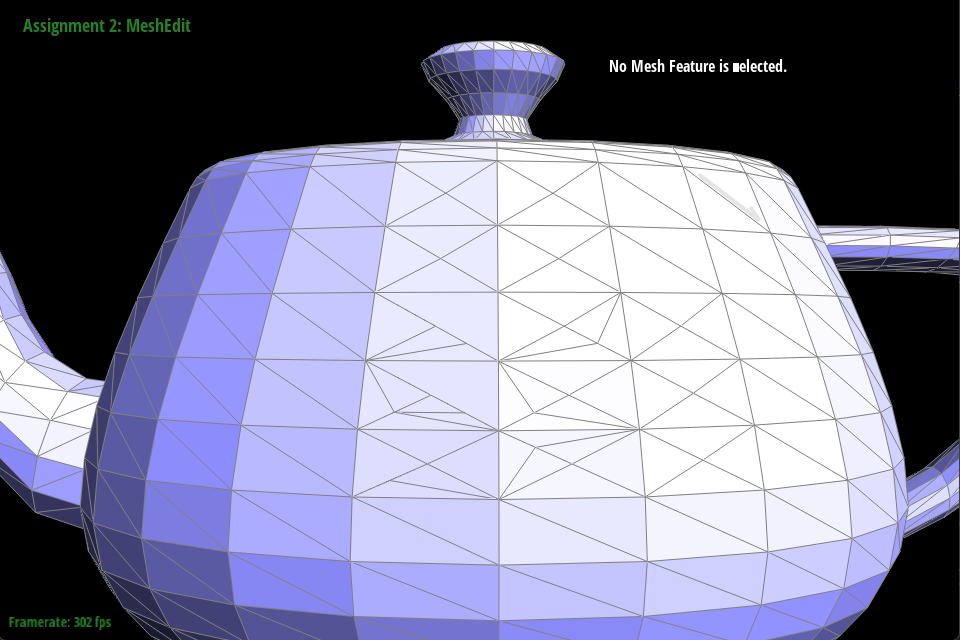

In this homework2, we implemented Bezier curves and surfaces, and triangle meshes and half-edge data structure. We implemented Bezier curves with 1D de Casteljau subdivision and Bezier surfaces with separable 1D de Casteljau. We also implemented area-weighted vertex normals, edge flip, edge split, and Loop subdivision for mesh upsampling. We also implemented a creative model for the art competition. It is actually a long work for doing all these mesh operations. We have to implement the half-edge data structure and then implement the operations on the half-edge data structure. We also have to implement the Bezier curves and surfaces. It is a good practice for us to understand the mesh operations and the Bezier curves and surfaces. We also have lots of bugs during these implementations which I will address in detailed questions. It is interesting or somehow exhuasting while debugging.
Section I: Bezier Curves and Surfaces
In this section, we will implement Bezier Curves and Surfaces.
Part 1: Bezier curves with 1D de Casteljau subdivision
Bezier curves are used for smooth modeling. It is a recursive algorithm to subdivide control points and finally get a smooth curve by their subdivisions. So we can have a "smmoth" curve as we want. In this 1D subdivision, we are just set several control points and get a smooth curve between them. We can also move control points to get a different smooth. The math equation for recursive logistics and the graph represents the process are below. It is not actually pretty hard to implement this. We create a recursive function to calculate the new control points(subdivisions) and do it again and again until we only have two subdivisions. And we can have a smooth curve.
Algorithm graph.
Math equation: \( B(t) = (1 - t) P_0 + t P_1 \)
where \( t \) ranges from 0 to 1.
Here is our 6 control points.
First step.
Second step.
Third step.
Fourth step.
Fifth step.
Final curve.
Different curve by moving around.
Different curve by moving around with subdivisions.
Part 2: Bezier surfaces with separable 1D de Casteljau
In this part, we transfer 1D Bezier curves to 2D surfaces. A Bezier surface is constructed by many Bezier cureves on it. The B¨¦zier surface is controlled by a grid of control points instead of just a set of points like in B¨¦zier curves. Each control point contributes to the shape based on its position and weight. By varying u and v, the surface smoothly interpolates between control points. In lecture, we have two ways to construct the surface. One is using separations of Bezier curves. And the other one is using algebraic formula to complete. We use the first way. We still have control points on the surface. But each points are also like a cross control points of Bezier curves. It is like a grid formed by many Bezier curves. We move these control points to generate our smooth surface. Coding part is actually also a recursive function using 1D Bezier curve we have before. We just try to combine 1D into 2D to generate that patch for the control points.
Algorithm graph.
Math equation.
Here is images for the surface.
Generated teapot.
Using bez file.
Section II: Triangle Meshes and Half-Edge Data Structure
Part 3: Area-weighted vertex normals
A vertex normal is a unit vector assigned to a vertex in a 3D model, representing the average direction the surface is facing at that point. It is commonly used in shading and rendering to achieve smooth lighting effects, particularly in Phong shading and Gouraud shading.
For this implementation for vertex normals, We need to calculate face normals (each polygon¡¯s normal), accumulate face normals at each vertex, and normalize vertex normals (to ensure they remain unit vectors). First for all, we need all the data that vertex has: its next, its next next(so we have the tri data). We know all the edges around it and we calculate the normal units for it. And we return it. But we might want to check the boundary and !halfedge to make sure we don't get some wired normal units.
Shading graph from wikipedia.
Here is images for implementations.
Original teapot.
Shading teapot.
Part 4: Edge flip
In this part, we can know how to flip the edge. We will use graphs we make to show.
Before we flip.
After we flip.
Lecture explaination.
And our implementation follows the graph. It is a long and buggy work. Because we also need to track on all new data and make sure they don't leak to the next flip operation. We spend lots of time on this part and next part.
We have bugs that we don't track the value of twin edge and flip the wrong edge even it may look right when you flip it for one time. We have to debug it for a long time. And we also need to check the boundary.
Keep track on the address of the edges and the vertex is useful for debugging. When we encounter some wierd bugs, we can check the address and the value of the next or twin to make sure we are flipping in a right way.
Or we also check the debugger for all steps we do and check one by one to see where is the error and we can try to find out what causes it. We use these methods when we find out the flipping just looks right but the value in it is wrong.
We do flip the edge but it is not correct in all value. An when we try to flip back, it becomes a mess. And we check value one by one to find the error. We miss the twin edge update. So we bring the old twin to our new flip.
Here is images for implementations.
Before we flip.
After we randommly flip.
Part 5: Edge split
This part is pretty same to the previous one but different operation. We also draw our own graphs to show the operation.
Before we split.
After we split.
Lecture explaination.
Here is images for implementations.
Before we split.
After we split.
Before we split and flip.

After we split and flip.
Part 6: Loop subdivision for mesh upsampling
In this part, we will wrap what we have and do some sampling too. Loop subdivision follows two main steps: 1. Edge Split (Triangle Subdivision): Each triangle is divided into four smaller triangles by adding a new vertex at the midpoint of each edge. 2. Vertex Position Update (Smoothing Step): The newly added vertices are computed using a weighted average of their neighboring vertices.
The original vertices are also updated to ensure smoothness. We have a more detailed step: Update original vertex positions, Compute new vertex positions for edges, Split every edge in the original mesh, Flip new edges connecting an old and new vertex, Copy new positions to final vertex positions.
Lecture explaination.
Notes for observations and pre-process.
This results in a smoother surface by averaging the positions of neighboring vertices and subdividing the edges.
Sharp corners become less sharp. The sharpness gets reduced, and the corner softens as additional vertices are added. This happens because the new vertices are averaged with the surrounding geometry during the subdivision process.
Subdivision causes the sharp corner to smooth out progressively more with each iteration.
We think edge splitting before applying subdivision can help maintain sharpness. By manually splitting certain edges, the sharpness is retained because the subdivision will not influence those parts as much.
As wse subdivide the cube repeatedly, it can become slightly asymmetric. This happens because the vertices are averaged in such a way that the geometry can slightly deviate from its original grid structure, and any initial imperfections in the cube's vertices get accentuated as they are subdivided.
If we want symmetry for the cube, edge splitting involves adding vertices along edges, which may help maintain symmetry during subdivision. Because this may help to maintain the original symmetry. Just prevent the edge moves to far away from the original posotions.
Debugging experience
We also have lots of issues here. Part 6 contains part 4 and part 5. So if we have to debug part 6, we have to debug part 4 and part 5 first. Before we have some dent faces on our cube. We think it is caused by split or maybe flip. And we went to OH twice to solve this single issue. And it is exhusting to solve this bug. Because we don't know what caued it. Even it is just 2 lines code bug. It is hard to find as we want. So we have to debug carefully and check much points as we can to find the bug. As we write above, we need to check each value of each split and flip. And you will see what is happenning in your code. We find out that we miss to update a next vertex of a halfedge in only one line.